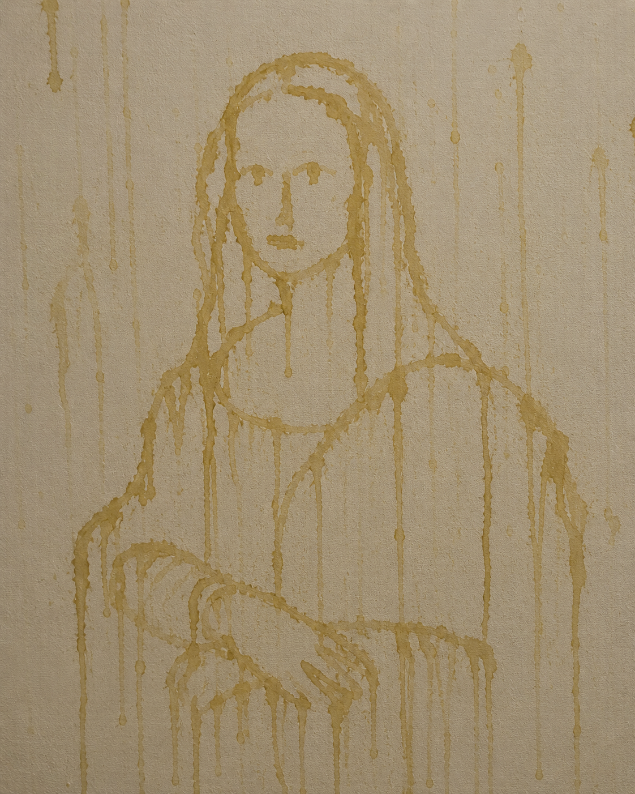

Artist Statement
I work primarily in a single medium — warm, nitrogen-rich, and produced entirely on-site. I do not sketch. I do not revise. Each piece emerges fully formed from a place deep within me, typically within the first thirty seconds of arriving at a location. My process is instinctual, immediate, and irreversible.
Critics have called my work "territorial." I prefer the term site-responsive. I am not marking objects. I am in dialogue with them. The rosemary bush speaks first. I answer. That is art.
I have no studio. The world is my studio. Also sometimes the rug, but that was a different period and we don't discuss it.
— Papi. Ballard.
La Gioconda (After da Vinci)

She smiled at me. I am certain of it. There is a quality to that expression — knowing, patient, slightly smug — that I recognized immediately as a fellow creature who has gotten away with something. We understood each other at once.
I approached the canvas with the gravity this subject deserved. My contribution is subtle but transformative: a warmth applied to the lower-left corner that da Vinci, working in the early sixteenth century, simply could not have anticipated. I have completed the painting. You're welcome, Leonardo.
"She still smiles. If anything, more so." — Papi